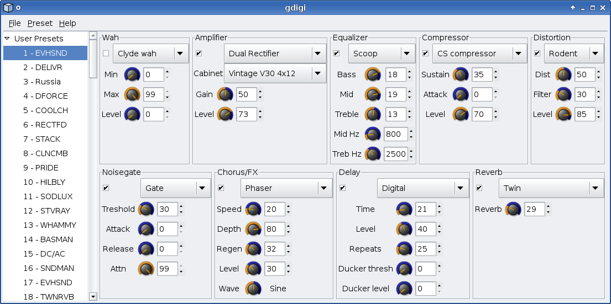

Control your Digitech effect pedal under Linux!
gdigi is tool aimed to provide X-Edit functionality to Linux users
Supported devices (list misses your DigiTech device? Please get in touch if you wish to add support for it!):

Download:
Version 0.4.0 was released 14th January 2013: gdigi-0.4.0.tar.bz2
Contact:
You can reach me by sending email to desowin@gmail.com
If you're looking for help, have patch or similiar please check out gdigi mailinglist at google groups
There's IRC channel available. Server: irc.freenode.net channel: #gdigi
Changelog:
Changelog is available here
Setup:
gdigi is available in Debian. To install issue following command:
sudo apt-get install gdigi
sudo apt-get install build-essential libasound2-dev libgtk-3-dev libglib2.0-dev libexpat1-dev libxml2-dev wget http://sourceforge.net/projects/gdigi/files/gdigi/0.4.0/gdigi-0.4.0.tar.bz2 tar xvjpf gdigi-0.4.0.tar.bz2 cd gdigi-0.4.0 make ./gdigi
Latest version:
You can get latest version of gdigi by checking project's git repository
git clone git://github.com/desowin/gdigi.git
Support: